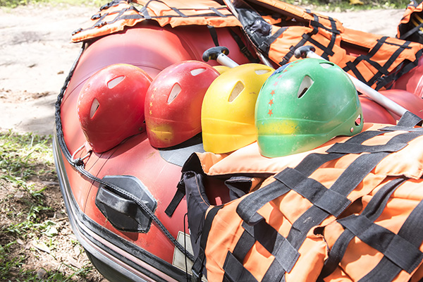

Nossos Passeios de Rafting
A empresa Aventuras do Rio, oferece experiências de rafting para diferentes níveis de aventura, desde passeios tranquilos para iniciantes até descidas emocionantes em corredeiras para os mais experientes. Com segurança, orientação profissional e contato direto com a natureza, cada passeio proporciona momentos únicos de diversão, adrenalina e conexão com o ambiente natural.
Rafting para iniciantes

Para quem vai praticar rafting pela primeira vez, a experiência começa com uma orientação da equipe, que explica as regras de segurança, os comandos básicos e como utilizar os equipamentos de proteção. Em seguida, os participantes embarcam em um bote acompanhado por um guia experiente, aprendendo a remar em equipe enquanto apreciam a natureza e vencem pequenas corredeiras adequadas ao seu nível. Tudo acontece em um ambiente preparado para iniciantes, proporcionando uma experiência divertida, segura e cheia de novas descobertas.
Aventura Intermediária

Para quem já tem alguma experiência com rafting, mas ainda não se considera avançado, o passeio oferece o equilíbrio ideal entre desafio e diversão. Os participantes poderão enfrentar corredeiras de nível intermediário, aprimorar suas técnicas de remada e desenvolver a coordenação com a equipe. Com o apoio de um guia experiente, cada trecho do rio será uma oportunidade de ganhar confiança, superar novos desafios e aproveitar a emoção da aventura com mais autonomia.
Rafting Avançado

Para os aventureiros mais experientes, o rafting avançado oferece uma experiência intensa, com corredeiras desafiadoras, águas turbulentas e obstáculos que exigem técnica, agilidade e decisões rápidas. Durante o percurso, a equipe precisará trabalhar em perfeita sintonia para superar cada desafio e manter o controle do bote. Com a orientação de profissionais qualificados e equipamentos adequados, essa aventura proporciona muita adrenalina e a oportunidade de testar habilidades em trechos mais exigentes do rio.
Compare nossos passeios
| Passeio | Duração | Dificuldade | Público Indicado |
|---|---|---|---|
| Rafting para Iniciantes | 2 horas | Fácil | Iniciantes |
| Rafting intermediário | 3 horas | Moderada | Pessoas com alguma experiencia |
| Rafting Avançado | 4 horas | Difícil | Pessoas experiêntes |
Pronto para sua próxima aventura?
Entre em contato conosco para saber mais sobre nossos passeios.
Entre em contato